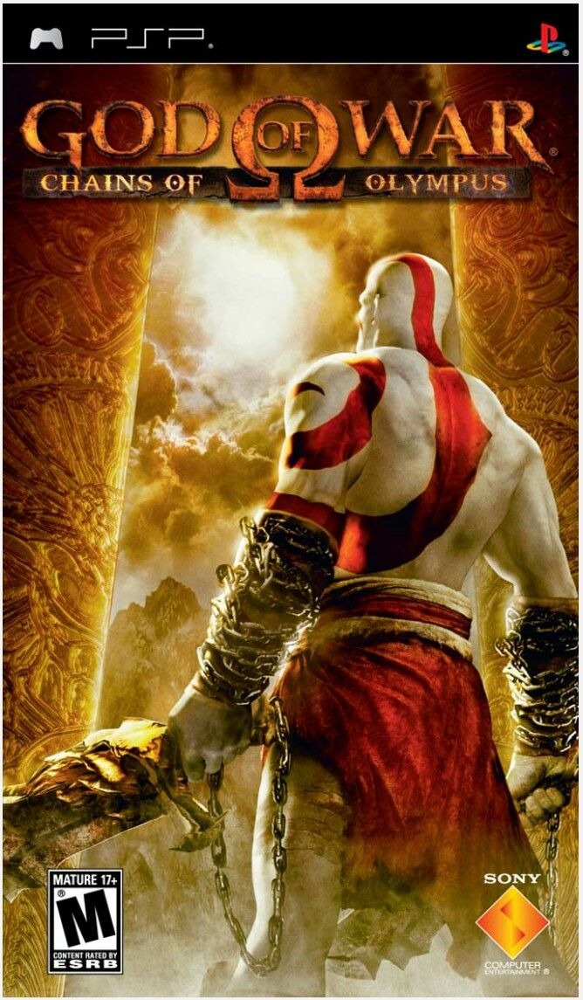
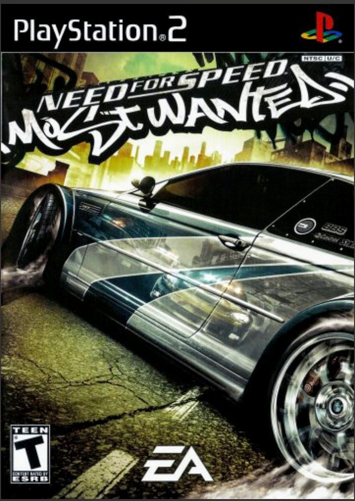

Sony PSP håndholdt frihed med PlayStation-kraft
Da Sony i 2004 præsenterede PlayStation Portable (PSP), var det et dristigt skridt ind i den håndholdte spilleverden, som indtil da havde været domineret af Nintendo. PSP var ikke blot endnu en lille spillemaskine det var en ægte PlayStation i lommeformat, der for første gang gjorde det muligt at tage konsoloplevelsen med sig overalt. Med sit elegante design, store widescreen-display og evnen til at afspille både spil, film og musik på de små UMD-diske, blev PSP hurtigt et symbol på innovation og stil. Den var kraftfuld, alsidig og forud for sin tid en enhed, der viste, at bærbar gaming kunne være lige så imponerende som på fjernsynet derhjemme.
Med over 80 millioner solgte enheder blev PSP en kæmpesucces og cementerede Sonys position som en af de mest indflydelsesrige spillere i spilindustrien. Den åbnede døren for en ny æra af mobil underholdning og lagde fundamentet for efterfølgeren PlayStation Vita. Hos Konsolklassikere finder du den ægte vare en fuldt testet og funktionsdygtig Sony PSP, klar til at levere nostalgi, underholdning og frihed lige i hånden. For mange var PSP ikke bare en spillemaskine det var den bærbare drøm, der gjorde PlayStation magien mobil.

De største psp spil nogensinde
- God of war chains of olympus
- 
- GTA Vice City Stories
- Need for speed
- 
- Syphon filter
- Crazy Taxi

- Rachet and Clank